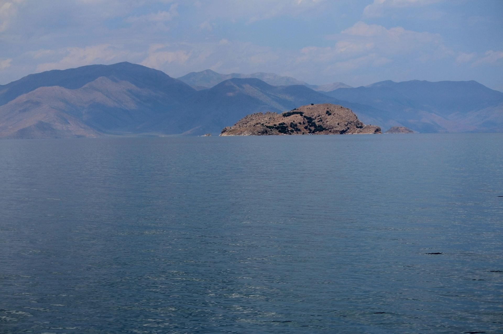
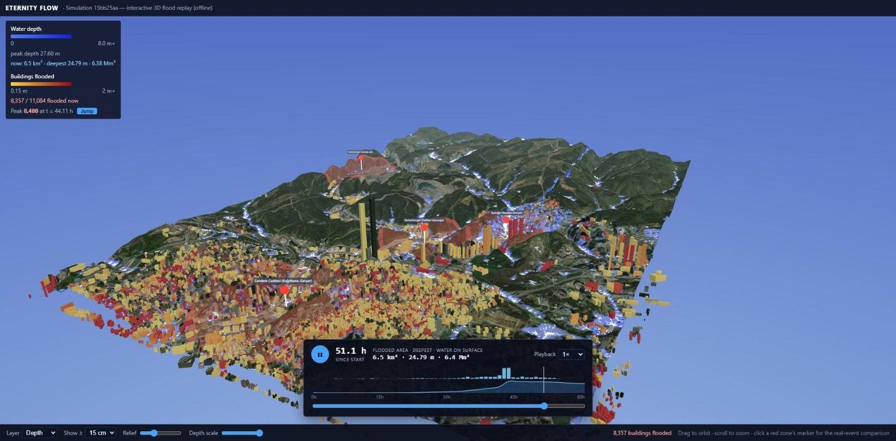
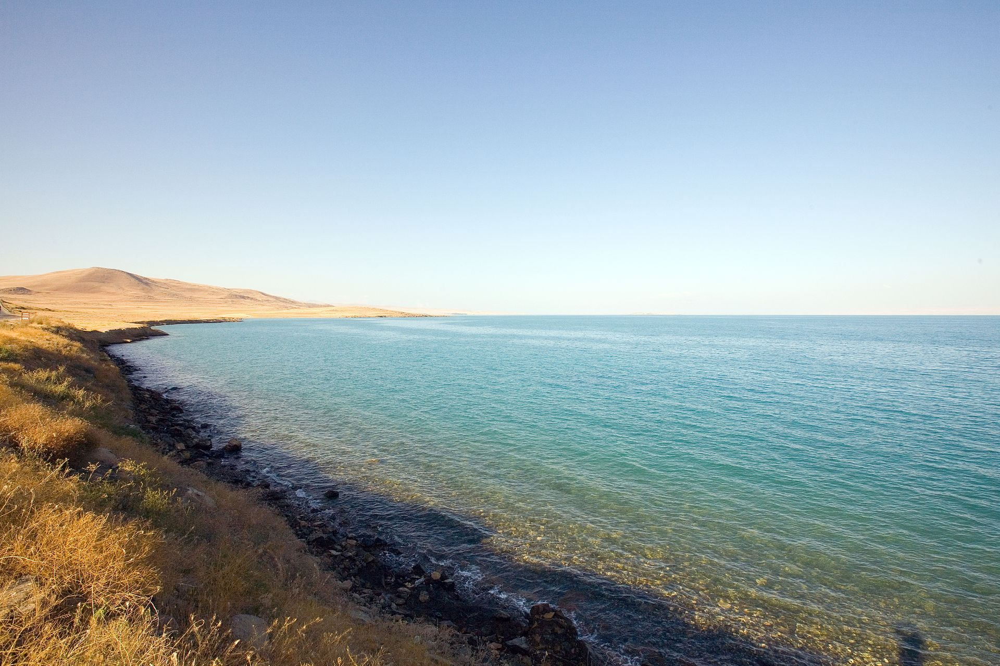

Global automated flood simulation platform. Pick any point on Earth and receive high-resolution, physics-based flood maps — street-level 3D, building-by-building impact, powered by GPU computing.
Copernicus 30m DEM · Multi-source Rainfall · MERIT-Hydro Basins · 2D Shallow-Water GPU Solvers
Select any location on the globe. Eternity Flow automatically assembles the terrain, land cover, soil and rainfall statistics for that exact place — fetched, aligned and conditioned without a single local file. Even sharper with your own city-scale terrain, drainage networks or point clouds.
GPU-accelerated 2D shallow-water solvers with mass conservation checked on every run. Buildings steer street flow, urban storm-drain networks can be dynamically coupled, and antecedent soil moisture comes from data — not assumptions.
Interactive 3D replay with per-street depth, velocity and hazard rating; per-building damage in €; displaced-population estimates; branded PDF reports; Google Earth exports; and a single offline HTML file you can hand to anyone.

İstanbul, 13–15 October 2026 — the heaviest rainfall the city had seen since 1942.
We fed the model the rainfall that actually fell — 204 mm over 60 hours — on the city's 5 m terrain, then compared the result with the locations the news reported underwater. The sites were collected from news reports first and geocoded independently; the model was sampled afterwards.
| Reported location | What happened | Model max depth* | Outcome |
|---|---|---|---|
| Ayazağa Meydanı | 16 shops condemned, boat rescues | 3.8 m | Matches |
| Cendere Caddesi | City bus swept by the current | 3.2 m | Matches |
| Kemerburgaz Cd. (Ayazağa) | Boat evacuations from businesses | 2.3 m | Matches |
| Sadabad, Kağıthane | Historic mosque flooded | 2.1 m | Matches |
| Kemerburgaz–Ayazağa road | Streets underwater, truck stranded | 1.9 m | Matches |
*Maximum computed depth within 100 m of the independently geocoded location.
Operational weather-model rainfall (e.g. WRF) is ingested automatically, in space and time.
The same engine that reproduced İstanbul turns the forecast into street-scale depth and hazard, hours ahead of the event.
Neighbourhood-level alerts with depth, timing and hazard class — which street, how deep, at what hour.

Municipalities, ministries, insurers and engineering firms — pilot projects and research collaborations welcome.
Tell us about your city, your basin or your portfolio — we'll show you what the water will do.